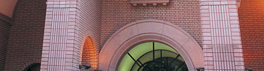
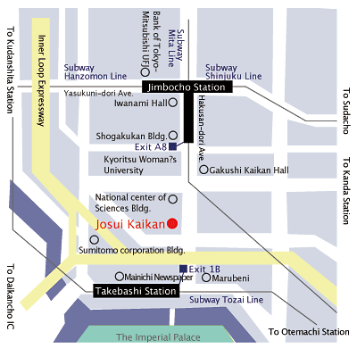
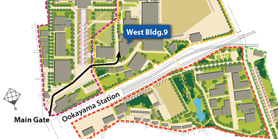

- 1st March (evening) :
- Registration and the Welcome Buffet at “Josui-Kaikan”, Hitotsubashi University
A few minutes walk from “Jimbocho” or “Takebashi” subway stations near the Imperial Palace. - 2nd March to the noon of 5th:
- Main Conference at “West Bldg. #9”, Tokyo Institute of Technology
A few minutes walk from “Ookayama” station - Afternoon of 5th March:
- The RIETI Policy Symposium, Closing Party at “Josui-Kaikan”, Hitotsubashi University
A few minutes walk from “Jimbocho” or “Takebashi” subway stations near the Imperial Palace.
Josui-Kaikan, Hitotsubashi University

Access to “Josui-Kaikan”, Hitotsubashi University (Address: 2-1-1, Hitotsubashi, Chiyoda-ku, Tokyo)
3-4 minutes walk from either “Jimbocho” Station (Exit A8) or “Takebashi” Station (Exit 1B) (see Map Josui-Kaikan).
| Address | 2-1-1, Hitotsubashi, Chiyoda-ku, Tokyo |
|---|---|
| Major Routes of Access |
From Narita Airport Three subway lines are crossing at “Jimbocho” station, Hanzomon Line, Mita Line and Shinjuku Line. Find routes by Train Route Finder. |
| Map |  |
West Bldg. 9, Ookayama Campus, Tokyo Institute of Technology

Access to “West Bldg. #9”, Tokyo Institute of Technology (Address: Ookayama, Meguro-ku, Tokyo)
West Bldg. #9 in Ookayama campus is a few minutes walk from “Ookayama” Station. (see Map Ookayama)
| Address | 2-12-1, Ookayama, Meguro-ku, Tokyo |
|---|---|
| Major Routes of Access |
Find routes by Train Route Finder. |
| Map |  |
Wide area map
Loading... |